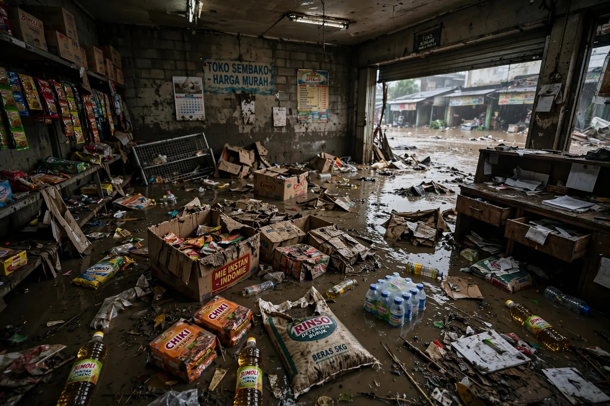
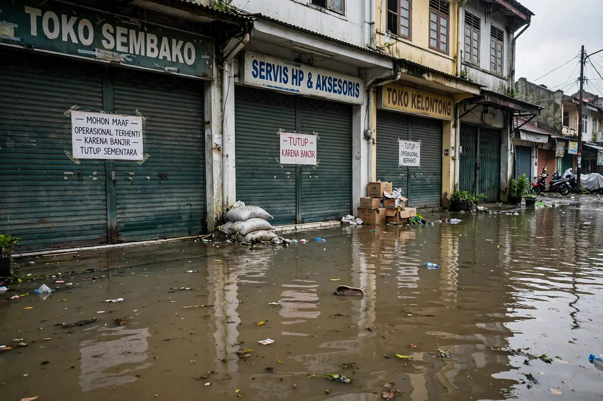
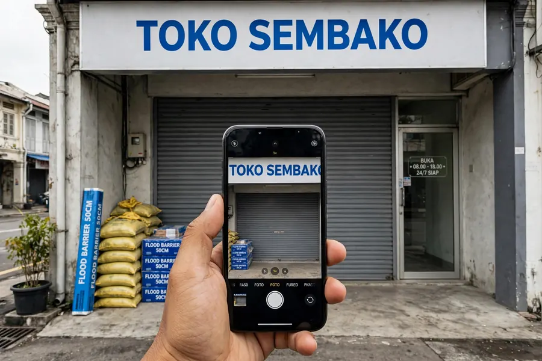
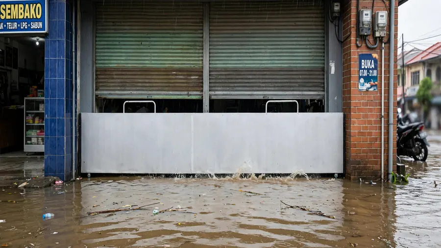
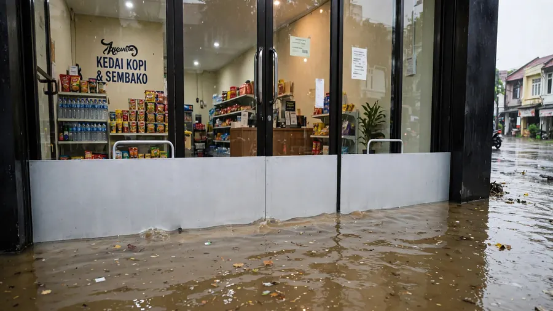
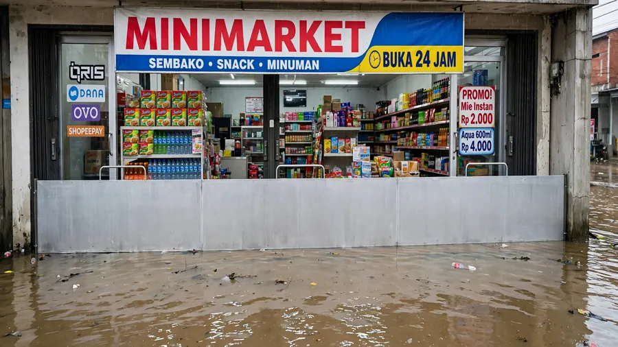
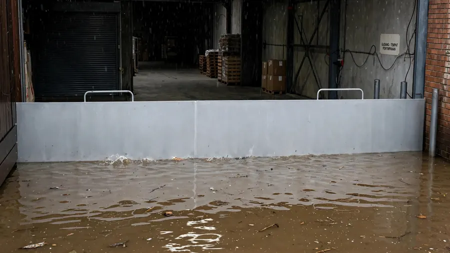

Lindungi Usaha Anda
Lindungi Pintu Rukodari Risiko Banjir
Sekat banjir custom untuk ruko, toko, gudang, restoran, dan tempat usaha. Melindungi stok barang, peralatan, serta operasional bisnis Anda.
Konsultasi Ukuran Ruko via WhatsApp →Lindungi Stok & Operasional Bisnis Anda
-
Custom
ukuran pintu -
Kuat &
tahan lama -
Praktis
dipasang -
Untuk ruko, toko,
gudang
Masalah Banjir untuk Pemilik Ruko
Air banjir dapat merusak stok barang, peralatan, interior, dan menghentikan operasional bisnis Anda. Karung pasir tidak praktis, renovasi mahal, dan tidak selalu efektif.


Kenapa Memilih Floodbar untuk Ruko?
-
Custom Sesuai Ukuran Pintu
Dibuat mengikuti ukuran bukaan ruko Anda, termasuk pintu lebar.
-
Melindungi Stok dan Peralatan
Membantu mengurangi risiko kerugian akibat banjir.
-
Praktis Dipasang
Dirancang agar pemasangan dan pelepasan lebih sederhana saat dibutuhkan.
-
Untuk Berbagai Tempat Usaha
Cocok untuk ruko, toko, gudang, restoran, kantor, dan tempat usaha lainnya.
Cuma 3 Langkah Mudah
-

Foto Pintu Ruko
Ambil foto bukaan pintu ruko Anda.
-
Ukur Lebar & Tinggi
Ukur bukaan pintu sesuai panduan kami.
-

Kirim ke WhatsApp
Kirim foto dan ukuran, tim Floodbar bantu cek solusinya.
- Kirim Foto & Ukuran Sekarang
Contoh Pemasangan di Ruko




Cara Mengukur Pintu Ruko
 Video pemasangan — minta via WhatsApp
Video pemasangan — minta via WhatsApp
Lihat Cara Kerja Floodbar
- Mudah dipasang
- Kokoh dan rapi
- Tahan air
- Bisa custom lebar
- Cocok untuk berbagai jenis ruko

Panduan Ukur Singkat
- Ukur lebar bukaan pintu (dari sisi ke sisi).
- Tentukan tinggi Floodbar yang diinginkan.
- Kirim foto dan hasil ukuran via WhatsApp.
Estimasi Harga
“Harga mengikuti lebar dan tinggi bukaan pintu ruko Anda — kirim foto dan ukuran untuk estimasi yang sesuai.”
Tanpa survei rumit. Cukup kirim foto dan hasil ukuran via WhatsApp, tim Floodbar akan hitungkan estimasinya.
Minta Estimasi HargaKata Pemilik Ruko
“Stok barang tetap aman saat banjir kiriman datang. Tidak perlu lagi menyiapkan karung pasir.”Budi Santoso — Pemilik Toko
“Pemasangannya rapi dan praktis. Toko tetap bisa beroperasi seperti biasa.”Agus Pratama — Pemilik Ruko
Pertanyaan yang Sering Ditanyakan
Apakah ukurannya bisa dibuat custom?
Ya. Floodbar dibuat mengikuti ukuran bukaan pintu. Kirim foto serta ukuran lebar dan tinggi agar tim dapat membantu mengecek kebutuhan Anda.
Apakah bisa dipasang sendiri?
Produk dirancang agar pemasangan dan pelepasan lebih praktis. Tim akan menjelaskan penggunaan sesuai tipe bukaan yang Anda konsultasikan.
Apakah cocok untuk gudang atau kantor?
Bisa. Solusi ini dapat dipertimbangkan untuk ruko, toko, gudang, restoran, kantor, serta beragam tempat usaha dengan bukaan yang sesuai.
Apakah cocok untuk rolling door dan pintu kaca?
Cocok. Floodbar dibuat custom mengikuti bukaan ruko Anda, termasuk pintu rolling door, pintu kaca, toko, minimarket, dan gudang.
Berapa estimasi harganya?
Harga mengikuti lebar dan tinggi bukaan pintu. Kirim foto pintu serta hasil pengukuran melalui WhatsApp, tim Floodbar akan membantu menghitung estimasinya.
Bagaimana cara meminta estimasi harga?
Kirim foto pintu serta hasil pengukuran melalui WhatsApp. Tim Floodbar akan membantu mengecek solusi dan estimasinya.
Jangan Tunggu Banjir Menghentikan Usaha Anda
Siapkan perlindungan untuk pintu ruko sebelum musim hujan. Konsultasikan ukuran dan kebutuhan bukaan Anda sekarang.